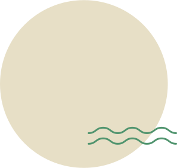
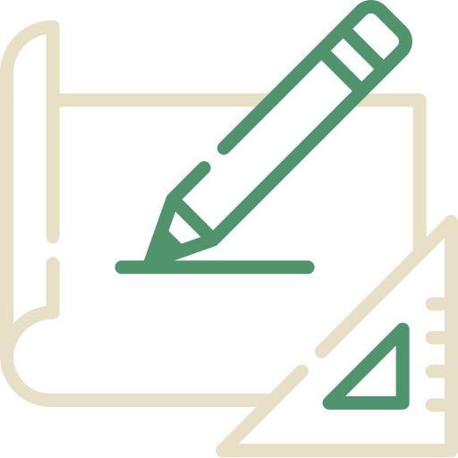

We create, research and pose hard questions.
We help you to find new angles to execute projects with the best results for your network.
About us
Kokonat is a professional, Nordic-based creative agency with main focus in
communications and strategic planning. We formed our services based on the concept of "think
and do" - not only do we plan and write strategies, but we also execute them as well!

Our services

/think
strategic planning
Our strategic planning services are made to support the goals and objectives of your
organization.
Read more
Creative approach is a perfect fit for projects aiming to refresh the
profile
of your organization or for example an upcoming event. In creative projects we cherish
creative problem solving and fresh touch to work. Regional planning?
→ Does your event need a new approach or a fresh concept? Or are you seeking a new
direction
for your organization's profile?
Analytical approach fits for research-like projects. If you need a
background
paper or debriefing of a phenomena we are happy to cover the hard work you. Our team is
specialised in Nordic co-operation, security governance and municipality branding and
marketing.
→ Are you preparing a development project but you’re missing information to support
decisions?
The resources put into strategic planning don’t need to be only a final report. We are happy
to
help you to execute your plans though effective and incisive communication.
...and do!
Creative communications planning
The main purpose of our communications projects is to recognize the meaning of your messages and
combine that with the aims and demands that your target audience have.
Read more
In these projects we do workshops and partly we work fully independently - depending on the
needs or you and your organization.
Planning creative and incisive messages for the target group at the right
time
requires
expertise. That is why we want to make sure that the main messages of the planned
communication are convergent with the own objectives of the client company.
→ Are you looking for a new way to approach a target group which is already familiar
with
your services or product? Or is your objective to refresh the ways of communication
through
a new communications strategy?
Got interested? Call us or send us an email to have a chat! Let’s think and do!